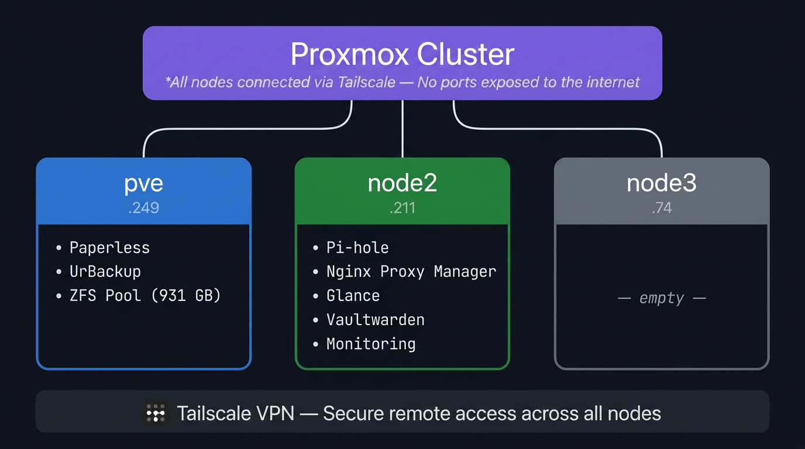
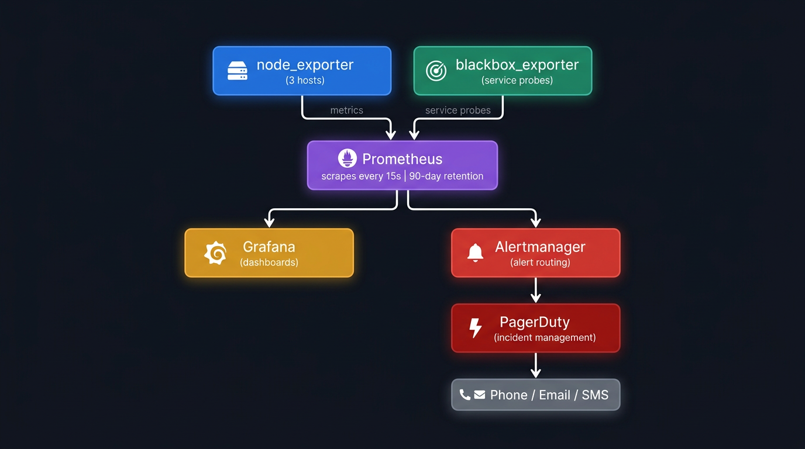
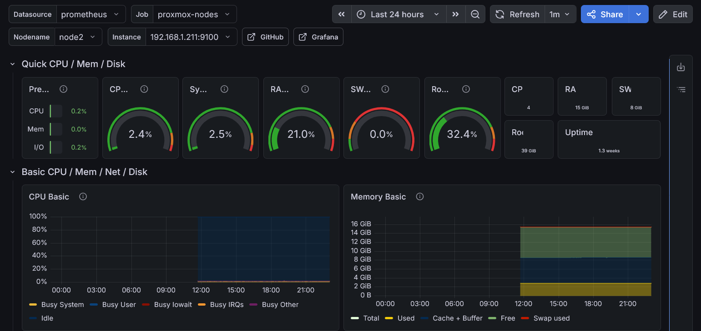
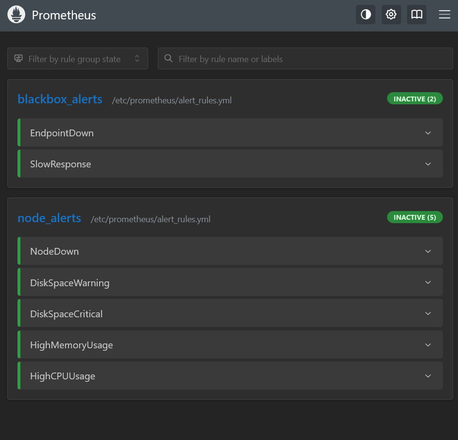
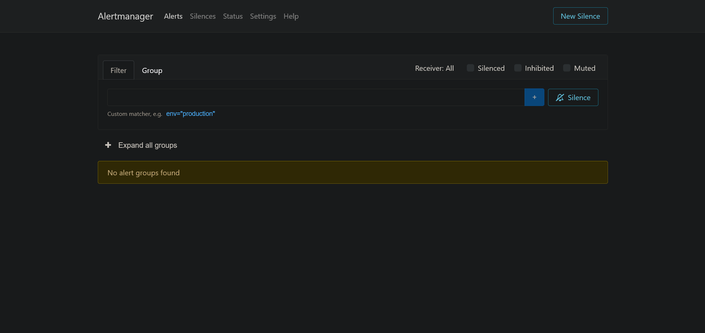
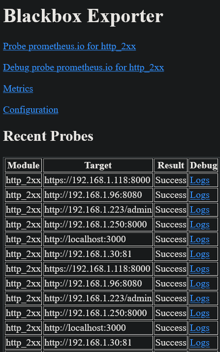
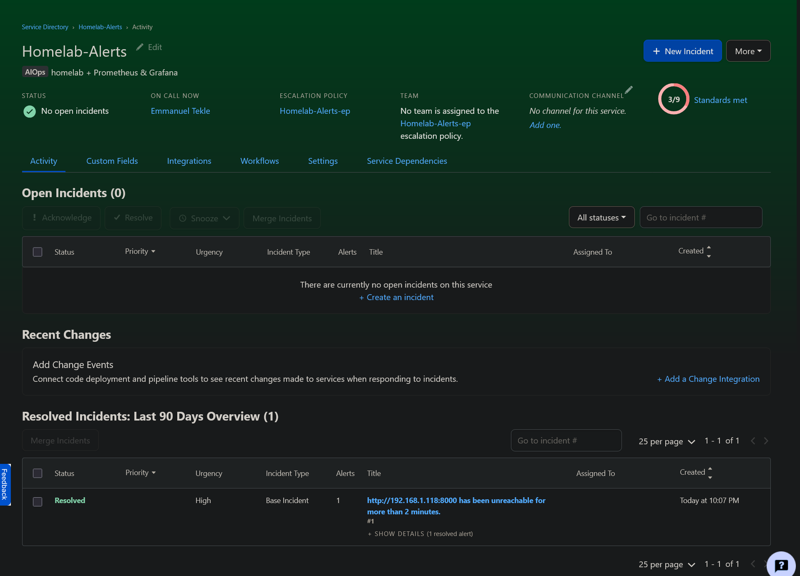
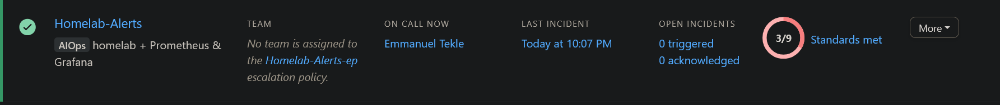

Hands-on infrastructure projects — every system built myself, every config written from scratch. No wizards, no copy-paste tutorials.
Full enterprise-grade monitoring stack on a 3-node Proxmox VE cluster with consumer hardware. All configuration written manually from the official documentation — no install wizards, no pre-built templates. The goal: understand and be able to explain every single line.
The stack scrapes metrics from all nodes and services every 15 seconds, stores them for 180 days in Prometheus, visualises them live in Grafana and sends an SMS via PagerDuty on incidents — and automatically calls your phone if you don't respond.


The core of the stack. Pull-based: scrapes metrics from all targets every 15s via HTTP. Stores time-series data locally and continuously evaluates alert rules.
Connects Prometheus as a data source and displays all metrics as real-time graphs, gauges and tables. Stores no data itself — always live queries.
Receives fired alerts from Prometheus, groups duplicates and delivers them to PagerDuty. Separation of detection (Prometheus) and delivery (Alertmanager).
Performs real HTTP/HTTPS and ICMP checks on all services from the outside — catches problems before users notice them.






for-durations you catch problems before users notice them. Alert-tuning is a skill — too sensitive and you go blind to noise.Two Bash scripts that automatically harden and audit an Ubuntu/Debian server. Written to learn Linux security fundamentals hands-on — from SSH lockdown to firewall configuration and audit logging. Tested on Ubuntu 22.04 LTS.
harden-server.sh configures the system in a single run: updates, SSH hardening, UFW firewall, auditd installation. security-audit.sh then reports the current security status — SSH config, firewall rules, failed login attempts and SUID files.
apt upgrade and enables unattended-upgrades for automatic security patches — no forgetting to update manually.2222 — only key-based authentication allowed.deny incoming. Only SSH (2222), HTTP (80) and HTTPS (443) explicitly allowed. Everything else blocked.auditd for security event logging — audit trail of system calls, file accesses and user actions.security-audit.sh immediately after hardening — checks SSH config, firewall status, SUID files and failed SSH logins. Gives instant visual confirmation that everything is correctly configured.